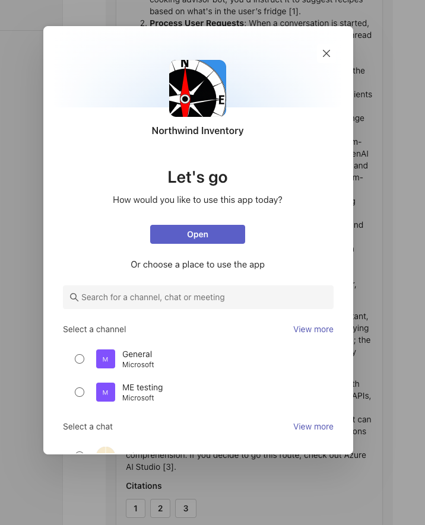
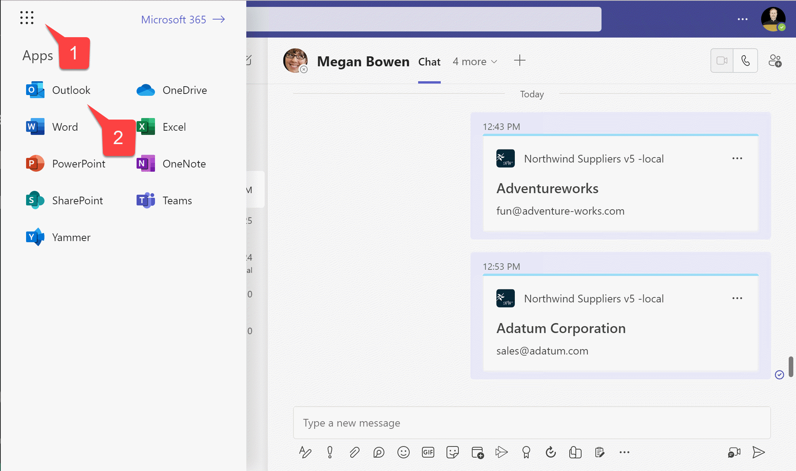

Lab M4 - Add authentication
In this lab you will secure your Northwind plugin from the previous lab with authentication using Entra ID SSO (single sign-on) to search and find your own contacts like suppliers information from Outlook.
Navigating the Extend Teams Message Extension labs (Extend Path)
Attention
This lab requires you to have an Azure Subscripton to provision bot services.
NOTE
The completed exercise with all of the code changes can be downloaded from here. This can be useful for troubleshooting purposes. If you ever need to reset your edits, you can clone again the repository and start over.
In this lab you will learn to:
-
how to add Entra ID single sign-on (SSO) to your plugin so users can seamlessly log into your app with the same account they use in Microsoft Teams
-
Access the Microsoft Graph API to access user data in Microsoft 365. Your app will act on behalf of the logged-in user so they can securely access their own content within your application like contacts from Outlook in this lab.
Introduction : Tasks involved to implement SSO (brief)
Implementing SSO for your plugin (Message extension app) involves several steps. Here is a high level over view of the process:
Register Your App in Microsoft Entra ID & Configure Your Bot in Azure Bot Service
- Create a new app registration in the Azure portal.
- Configure the app with necessary permissions and scopes.
- Generate a client secret for your app.
- Create a bot in the Azure Bot Service.
- Add the Microsoft 365 channel to your bot.
- Set up OAuth connection settings in the Azure portal.
Enable SSO in Your Teams App
- Update your message extension's bot code to handle authentication and token exchange.
- Use the Bot Framework SDK to integrate SSO capabilities.
- Implement the OAuth flow to obtain access tokens for the user.
Configure Authentication in Teams
- Add the necessary permissions in the Teams app manifest.
Exercise 1: Register Your App in Microsoft Entra ID and Configure Your Bot in Azure Bot Service
Luckily for you, we’ve streamlined everything so that it’s ready to go as soon as you hit F5. However, let’s go over the specific changes you’ll need to make in the project for registering and configuring these resources.
Step 1: Copy files and folders
Create a new folder called entra inside folder infra in your root folder.
Create two new files in the entra folder called entra.bot.manifest.json and entra.graph.manifest.json
Copy code from this file into entra.bot.manifest.json and same for entra.graph.manifest.json from this file.
These files are needed to provision the Entra ID app registrations (previously know as Azure Active Directory app registrations) needed for the bot as well as the one for graph for token exchange between them.
Next in the infra folder create files azure.local.bicep and copy code from this file and create file azure.parameters.local.json in the same folder infra and copy code from this file
These file help with the bot registration. This will ensure the bot service is provisioned in Azure even when you run app locally. This is required for this authentication flow.
What is happening with these files?
When Agents Toolkit runs the app locally, it will provision a new Azure AI Bot Service into the resource group which uses the F0 SKU which grants unlimited messages to be sent to standard channels, this includes Microsoft Teams and Microsoft 365 channel (Outlook and Copilot) and does not incur a cost.
Step 2: Update existing code
Next, open file azurebot.bicep under botRegistration folder which is under infra folder and add below code snippet after declaration of "param botAppDomain"
param graphAadAppClientId string
@secure()
param graphAadAppClientSecret string
param connectionName string
Next add below snippet to provision bot service into the same file at end of line.
resource botServicesMicrosoftGraphConnection 'Microsoft.BotService/botServices/connections@2022-09-15' = {
parent: botService
name: connectionName
location: 'global'
properties: {
serviceProviderDisplayName: 'Azure Active Directory v2'
serviceProviderId: '30dd229c-58e3-4a48-bdfd-91ec48eb906c'
clientId: graphAadAppClientId
clientSecret: graphAadAppClientSecret
scopes: 'email offline_access openid profile Contacts.Read'
parameters: [
{
key: 'tenantID'
value: 'common'
}
{
key: 'tokenExchangeUrl'
value: 'api://${botAppDomain}/botid-${botAadAppClientId}'
}
]
}
}
This will create a new OAUTH connection for token exchange between bot service and the graph entra ID app.
Changes to infrastructure for plugin
We require a different infrastructure to run this setup compared to the non-authenticated plugins we've previously built in this path and hence we need to rewire. Next steps will help you with this.
Next, open the teamsapp.local.yml file and replace its content with the code snippet below. This will rewire parts of the infrastructure, including deploying a bot service in Azure for our lab.
# yaml-language-server: $schema=https://aka.ms/teams-toolkit/1.0.0/yaml.schema.json
# Visit https://aka.ms/teamsfx-v5.0-guide for details on this file
# Visit https://aka.ms/teamsfx-actions for details on actions
version: 1.0.0
provision:
- uses: script
name: Ensure database
with:
run: node db-setup.js
workingDirectory: scripts
# Creates a Teams app
- uses: teamsApp/create
with:
# Teams app name
name: NorthwindProducts-${{TEAMSFX_ENV}}
# Write the information of created resources into environment file for
# the specified environment variable(s).
writeToEnvironmentFile:
teamsAppId: TEAMS_APP_ID
- uses: aadApp/create
with:
name: ${{APP_INTERNAL_NAME}}-bot-${{TEAMSFX_ENV}}
generateClientSecret: true
signInAudience: AzureADMultipleOrgs
writeToEnvironmentFile:
clientId: BOT_ID
clientSecret: SECRET_BOT_PASSWORD
objectId: BOT_AAD_APP_OBJECT_ID
tenantId: BOT_AAD_APP_TENANT_ID
authority: BOT_AAD_APP_OAUTH_AUTHORITY
authorityHost: BOT_AAD_APP_OAUTH_AUTHORITY_HOST
- uses: aadApp/update
with:
manifestPath: "./infra/entra/entra.bot.manifest.json"
outputFilePath : "./build/entra.bot.manifest.${{TEAMSFX_ENV}}.json"
- uses: aadApp/create
with:
name: ${{APP_INTERNAL_NAME}}-graph-${{TEAMSFX_ENV}}
generateClientSecret: true
signInAudience: AzureADMultipleOrgs
writeToEnvironmentFile:
clientId: GRAPH_AAD_APP_ID
clientSecret: SECRET_GRAPH_AAD_APP_CLIENT_SECRET
objectId: GRAPH_AAD_APP_OBJECT_ID
tenantId: GRAPH_AAD_APP_TENANT_ID
authority: GRAPH_AAD_APP_OAUTH_AUTHORITY
authorityHost: GRAPH_AAD_APP_OAUTH_AUTHORITY_HOST
- uses: aadApp/update
with:
manifestPath: "./infra/entra/entra.graph.manifest.json"
outputFilePath : "./build/entra.graph.manifest.${{TEAMSFX_ENV}}.json"
- uses: arm/deploy
with:
subscriptionId: ${{AZURE_SUBSCRIPTION_ID}}
resourceGroupName: ${{AZURE_RESOURCE_GROUP_NAME}}
templates:
- path: ./infra/azure.local.bicep
parameters: ./infra/azure.parameters.local.json
deploymentName: Create-resources-for-${{APP_INTERNAL_NAME}}-${{TEAMSFX_ENV}}
bicepCliVersion: v0.9.1
# Validate using manifest schema
- uses: teamsApp/validateManifest
with:
# Path to manifest template
manifestPath: ./appPackage/manifest.json
# Build Teams app package with latest env value
- uses: teamsApp/zipAppPackage
with:
# Path to manifest template
manifestPath: ./appPackage/manifest.json
outputZipPath: ./appPackage/build/appPackage.${{TEAMSFX_ENV}}.zip
outputJsonPath: ./appPackage/build/manifest.${{TEAMSFX_ENV}}.json
# Validate app package using validation rules
- uses: teamsApp/validateAppPackage
with:
# Relative path to this file. This is the path for built zip file.
appPackagePath: ./appPackage/build/appPackage.${{TEAMSFX_ENV}}.zip
# Apply the Teams app manifest to an existing Teams app in
# Teams Developer Portal.
# Will use the app id in manifest file to determine which Teams app to update.
- uses: teamsApp/update
with:
# Relative path to this file. This is the path for built zip file.
appPackagePath: ./appPackage/build/appPackage.${{TEAMSFX_ENV}}.zip
# Extend your Teams app to Outlook and the Microsoft 365 app
- uses: teamsApp/extendToM365
with:
# Relative path to the build app package.
appPackagePath: ./appPackage/build/appPackage.${{TEAMSFX_ENV}}.zip
# Write the information of created resources into environment file for
# the specified environment variable(s).
writeToEnvironmentFile:
titleId: M365_TITLE_ID
appId: M365_APP_ID
deploy:
# Run npm command
- uses: cli/runNpmCommand
name: install dependencies
with:
args: install --no-audit
# Generate runtime environment variables
- uses: file/createOrUpdateEnvironmentFile
with:
target: ./.localConfigs
envs:
BOT_ID: ${{BOT_ID}}
BOT_PASSWORD: ${{SECRET_BOT_PASSWORD}}
STORAGE_ACCOUNT_CONNECTION_STRING: ${{SECRET_STORAGE_ACCOUNT_CONNECTION_STRING}}
CONNECTION_NAME: ${{CONNECTION_NAME}}
Open .env.local file under env folder and completely remove all variable and add below for a fresh start.
APP_INTERNAL_NAME=Northwind
APP_DISPLAY_NAME=Northwind
CONNECTION_NAME=MicrosoftGraph
Open .env.local.user file under env folder and completely remove all variable and add below for a fresh start.
SECRET_BOT_PASSWORD=
SECRET_GRAPH_AAD_APP_CLIENT_SECRET=
SECRET_STORAGE_ACCOUNT_CONNECTION_STRING=UseDevelopmentStorage=true
Exercise 2: New search command for Contacts
Step 1: Add a command to search contacts (suppliers)
To start, add a new command for searching contacts. We’ll eventually retrieve contact details from Microsoft Graph, but for now, we’ll use mock data to ensure the message extension command functions correctly. Go to src folder > messageExtensions and add an new file supplierContactSearchCommand.ts in it.
Copy the content from below into the new file.
import {
CardFactory,
TurnContext
} from "botbuilder";
const COMMAND_ID = "supplierContactSearch";
let queryCount = 0;
async function handleTeamsMessagingExtensionQuery(context: TurnContext, query: any): Promise<any> {
let name = '';
if (query.parameters.length === 1 && query.parameters[0]?.name === "name") {
[name] = (query.parameters[0]?.value.split(','));
} else {
name = cleanupParam(query.parameters.find((element) => element.name === "name")?.value);
}
console.log(`üçΩÔ∏è Query #${++queryCount}:\name of contact=${name}`);
const filteredProfile = [];
const attachments = [];
const allContacts = [
{
displayName: "John Doe",
emailAddresses: [
{ address: "john.doe@example.com" }
]
},
{
displayName: "Jane Smith",
emailAddresses: [
{ address: "jane.smith@example.com" }
]
},
{
displayName: "Alice Johnson",
emailAddresses: [
{ address: "alice.johnson@example.com" }
]
}
];
allContacts.forEach((contact) => {
if (contact.displayName.toLowerCase().includes(name.toLowerCase()) || contact.emailAddresses[0]?.address.toLowerCase().includes(name.toLowerCase())) {
filteredProfile.push(contact);
}
});
filteredProfile.forEach((prof) => {
const preview = CardFactory.heroCard(prof.displayName,
`with email ${prof.emailAddresses[0]?.address}`);
const resultCard = CardFactory.heroCard(prof.displayName,
`with email ${prof.emailAddresses[0]?.address}`);
const attachment = { ...resultCard, preview };
attachments.push(attachment);
});
return {
composeExtension: {
type: "result",
attachmentLayout: "list",
attachments: attachments,
},
};
}
function cleanupParam(value: string): string {
if (!value) {
return "";
} else {
let result = value.trim();
result = result.split(',')[0]; // Remove extra data
result = result.replace("*", ""); // Remove wildcard characters from Copilot
return result;
}
}
export default { COMMAND_ID, handleTeamsMessagingExtensionQuery }
Go to src folder > searchApp.ts file and import the newly created command.
import supplierContactSearchCommand from "./messageExtensions/supplierContactSearchCommand";
And add another case in the handleTeamsMessagingExtensionQuery for the newly added command after case customerSearchCommand.COMMAND_ID:
case supplierContactSearchCommand.COMMAND_ID: {
return supplierContactSearchCommand.handleTeamsMessagingExtensionQuery(context, query);
}
Now to go appPackage > manifest.json and add the command inside the commands array under the node composeExtensions.
{
"id": "supplierContactSearch",
"context": [
"compose",
"commandBox"
],
"description": "Search for a contact in the user's Outlook contacts list for Northwind",
"title": "Contact search",
"type": "query",
"parameters": [
{
"name": "name",
"title": "Contact search",
"description": "Type name of the contact or company which forms the domain for email address of the contact, to search my Outlook contacts list",
"inputType": "text"
}
]
}
So you have now added a new non authenticated command to search contacts from a mock list.
Step 2: Sign in to Azure in Agents Toolkit
Agents Toolkit requires you to sign in to an Azure account and have a subscription before you can provision the resource instances. You'll then use these resources to deploy your app to host it in Azure.
On the Activity Bar of your project editor, select the Microsoft Teams icon 1️⃣. This will open the Agents Toolkit extension panel.
On the Agents Toolkit panel, under Accounts, select "Sign in to Azure" 2️⃣.

In the dialog that appears, select "Sign in".

Step 3: Run the application in Teams to test new command
To test the new command you need to run the app locally.
Click F5 to start debugging, or click the start button 1️⃣. You will have an opportunity to select a debugging profile; select Debug in Teams (Edge) 2️⃣ or choose another profile.

F5 in this lab
When you press F5 to run the application, it will also provision all the necessary resources for the authenticated flow, as we configured everything using the Team Toolkit's actions in Exercise 1.
Since you cleared the environments variable, you will install all Entra ID apps and bot services in Azure. During the first run, you'll need to select a resource group in your Azure subscription, which you logged into via the Agents Toolkit, for provisioning resources.
Choose + New resource group to keep things tidy.And choose the default name Agents Toolkit has suggested and select Enter.
Next, choose a Location. For this lab just choose Central US

Next Agents Toolkit will go ahead and provision the resources but will also ask you a confirmation before doing so.

Select Provision.
Once it's provisioned all the resources, you will get the Northwind app install dialog in a browser, select Add.

Once installed, you will be given another dialog to open the app. This will open the app as a message extension in a personal chat. Select Open.
Since we only need to test if the command works or not, we will only test the app in Teams chat. In the personal chat with the app, select the Contacrt search and type a.

If it lists the contacts as shown above, the command is working, but with mock data. We will fix this in the next exercise.
Exercise 3 : Enable authentication for new command
In the previous step, you have laid the foundation for the new command. Next you will add authentication on top of the command, replace the mock contact list and replace it with actual contact list from the logged in user's Outlook contacts.
You will first install some npm packages needed for the plugin. Create a new terminal window in the project.
Run below script in the terminal :
npm i @microsoft/microsoft-graph-client @microsoft/microsoft-graph-types
Locate config.ts file in the src folder. Add a "," after storageAccountConnectionString: process.env.STORAGE_ACCOUNT_CONNECTION_STRING and add the new property and value for connectionName as below.
const config = {
botId: process.env.BOT_ID,
botPassword: process.env.BOT_PASSWORD,
storageAccountConnectionString: process.env.STORAGE_ACCOUNT_CONNECTION_STRING,
connectionName: process.env.CONNECTION_NAME
};
Now create a folder called services under src folder of your base project. Create two files AuthService.ts and GraphService.ts in the services folder.
-
AuthService : contains a class that provides authentication services. It includes a method getSignInLink which asynchronously retrieves a sign-in URL from a client using specific connection details and returns this URL.
-
GraphService : defines a class that interacts with the Microsoft Graph API. It initializes a Graph client using an authentication token and provides a method getContacts to fetch the user's contacts, selecting specific fields (displayName and emailAddresses).
Next, copy paste below code into AuthService.ts
import {
AdaptiveCardInvokeResponse,
CloudAdapter,
MessagingExtensionQuery,
MessagingExtensionResponse,
TurnContext,
} from 'botbuilder';
import { UserTokenClient } from 'botframework-connector';
import { Activity } from 'botframework-schema';
import config from '../config';
export class AuthService {
private client: UserTokenClient;
private activity: Activity;
private connectionName: string;
constructor(context: TurnContext) {
const adapter = context.adapter as CloudAdapter;
this.client = context.turnState.get<UserTokenClient>(
adapter.UserTokenClientKey
);
this.activity = context.activity;
this.connectionName = config.connectionName;
}
async getUserToken(
query?: MessagingExtensionQuery
): Promise<string | undefined> {
const magicCode =
query?.state && Number.isInteger(Number(query.state)) ? query.state : '';
const tokenResponse = await this.client.getUserToken(
this.activity.from.id,
this.connectionName,
this.activity.channelId,
magicCode
);
return tokenResponse?.token;
}
async getSignInComposeExtension(): Promise<MessagingExtensionResponse> {
const signInLink = await this.getSignInLink();
return {
composeExtension: {
type: 'auth',
suggestedActions: {
actions: [
{
type: 'openUrl',
value: signInLink,
title: 'SignIn',
},
],
},
},
};
}
async getSignInAdaptiveCardInvokeResponse(): Promise<AdaptiveCardInvokeResponse> {
const signInLink = await this.getSignInLink();
return {
statusCode: 401,
type: 'application/vnd.microsoft.card.signin',
value: {
signinurl: signInLink,
},
};
}
async getSignInLink(): Promise<string> {
const { signInLink } = await this.client.getSignInResource(
this.connectionName,
this.activity,
''
);
return signInLink;
}
}
Next, copy paste below code into GraphService.ts
import { Client } from '@microsoft/microsoft-graph-client';
export class GraphService {
private _token: string;
private graphClient: Client;
constructor(token: string) {
if (!token || !token.trim()) {
throw new Error('SimpleGraphClient: Invalid token received.');
}
this._token = token;
this.graphClient = Client.init({
authProvider: done => {
done(null, this._token);
},
});
}
async getContacts(): Promise<any> {
const response = await this.graphClient
.api(`me/contacts`)
.select('displayName,emailAddresses')
.get();
return response.value;
}
}
Now, go back to the supplierContactSearchCommand.ts file and import these two services we just added.
import { AuthService } from "../services/AuthService";
import { GraphService } from "../services/GraphService";
Next, add the code that initializes authentication, retrieves a user token, checks its validity, and then sets up a service to interact with the Microsoft Graph API if the token is valid. If the token is invalid, it prompts the user to sign in.
Copy below code into the handleTeamsMessagingExtensionQuery function above the mock definition of allContacts constant.
const credentials = new AuthService(context);
const token = await credentials.getUserToken(query);
if (!token) {
return credentials.getSignInComposeExtension();
}
const graphService = new GraphService(token);
Next, replace the mock definition of allContacts constant with below code:
const allContacts = await graphService.getContacts();
Next go to appPackage/manifest.json file and update the node validDomains as below
"validDomains": [
"token.botframework.com",
"${{BOT_DOMAIN}}"
]
Also add comma "," after validDomains array and add a node for webApplicationInfo and update it with below value
"webApplicationInfo": {
"id": "${{BOT_ID}}",
"resource": "api://${{BOT_DOMAIN}}/botid-${{BOT_ID}}"
},
Next, upgrade the manifest version from "1.0.10" to "1.0.11" so the changes are reflected.
These manifest changes will make sure the sign-in url is correctly formed and sent to the user for consent.
Exercise 4: Test authentication
Step 1: Run app locally
Stop the local debugger if it is kept running. Since you have updated the manifest with a new command, you will want to re install the app with the new package.
Restart debugger by clicking F5, or click the start button 1️⃣. You will have an opportunity to select a debugging profile; select Debug in Teams (Edge) 2️⃣ or choose another profile.
Provision
Here you will again get a dialog confirming if you want to provision the resources. Select "Provision". This is not actually provisioning new resources just overwriting existing resources.
The debugging will open teams in a browser window. Make sure you login using the same credentials you signed into Agents Toolkit. Once you're in, Microsoft Teams should open up and display a dialog offering to open your application.

Once opened it immediately ask you where you want to open the app in. By default it's personal chat. You could also select it in a channel or group chat as shown. Select "Open".

Now you are in a personal chat with the app. But we are testing in Copilt so follow next instruction.
In Teams click on Chat and then Copilot. Copilot should be the top-most option. Click on the Plugin icon and select Northwind Inventory to enable the plugin.
Step 2 : Enter test data
Before we test the plugin to bring actual contacts, we'll need to add some contact information. So let us first ensure we have some contacts in Microsoft 365.
1️⃣ From Microsoft Teams, click the "waffle" menu
2️⃣ Select Microsoft Outlook

1️⃣ Within Outlook, click the "Contacts" button
2️⃣ Enter some new contacts
The app is simple, and will only display the person or company name and email address. If you want to play along with the business scenario, make them sound like suppliers.

Step 2: Test in Copilot
Ask Copilot for contacts by using this prompt- Find my conacts with name {first name} in Northwind (Replace {first name} with what name you have given for your contacts in Exercise 4, Step 1)
You will get a sign-in button to authenticate (one time only) as shown in the screen.

This is the indication that you have an some sort of an authentication set in place to call this feature of the plugin. Select Sign in to Northwind Inventory
You will now get a dialog to interact and provide consent as show in the GIF below. Once consented you should be able to get back results form Microsoft 365 Copilot.

Congratulations
This was a hard one, but you ACED it! Thanks for doing the Message Extension agent track!